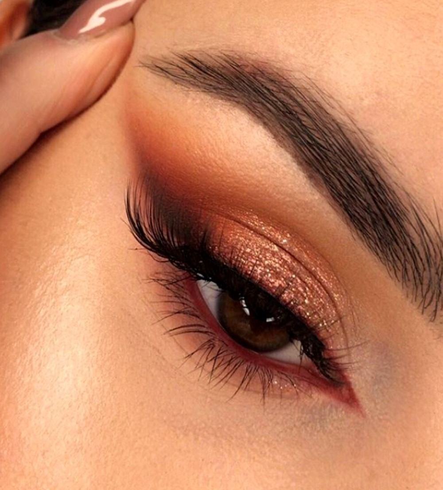

Preparei um tutorial de maquiagem para mostrar como fazer um olho bonito e prático!

Vamos lá?
✔ Passo 1 : Aplique primer na pálpebra: antes de aplicar qualquer pigmento, não se esqueça de preparar a
pálpebra para uma
melhor fixação e destaque do pigmento da sombra. O primer é um produto específico para essa etapa, mas ele pode
ser substituído por base ou corretivo.
✔ Passo 2 : Não tenha preguiça de esfumar: o segredo para evitar que o olhar fique pesado, é esfumar as sombras
aplicadas. A
técnica dá profundidade ao olhar e não deixa que as cores fiquem marcadas.
✔ Passo 3 : Dê atenção para as sobrancelhas: ao fazer uma maquiagem, atente-se à sua sobrancelha. Se você possui
falhas, é
possível preenchê-las com lápis, gel ou até sombra comum, com o auxílio de um pincel chanfrado. Atente-se para
não exagerar no pigmento, pois sua expressão pode ficar carregada.
✔ Passo 4 : Aposte no delineador! Fazer um delineado perfeito não precisa ser uma tarefa difícil e com essa
técnica e
treino, é possível fazer um traço de arrasar. O delineador torna o olhar mais expressivo e o gatinho é
supercharmoso!
✔ Passo 5 : Finalize com máscara para cílios para dar acabamento para a maquiagem dos olhos, não se esqueça do
rímel já que
o produto complementa o delineado e destaca o olhar. Para um efeito mais dramático, a dica é apostar nos cílios
postiços.